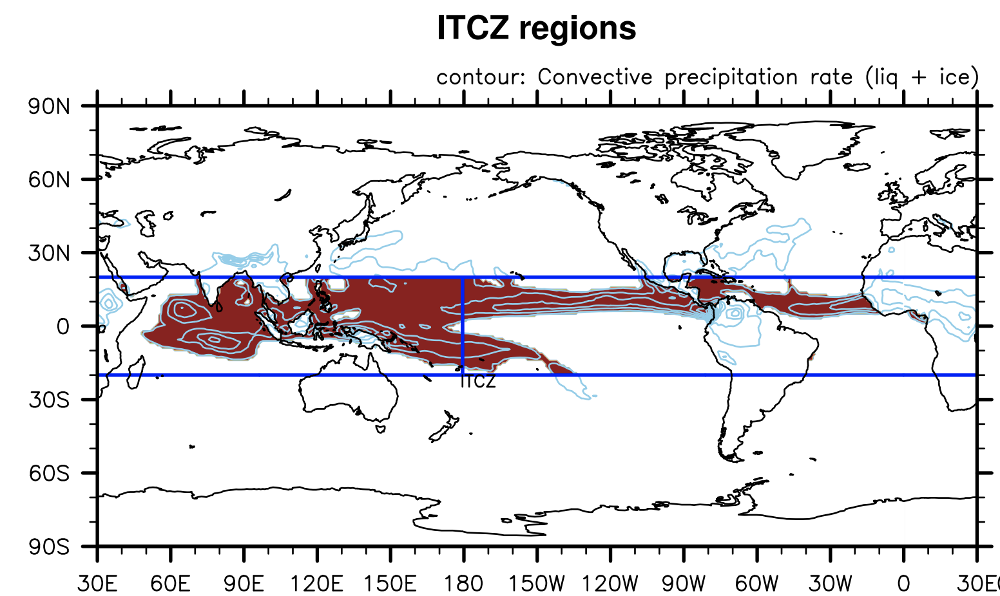
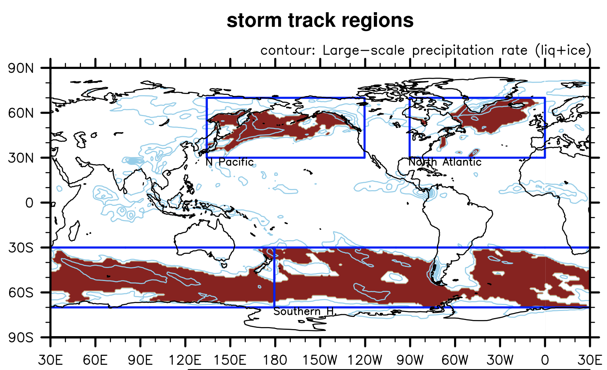
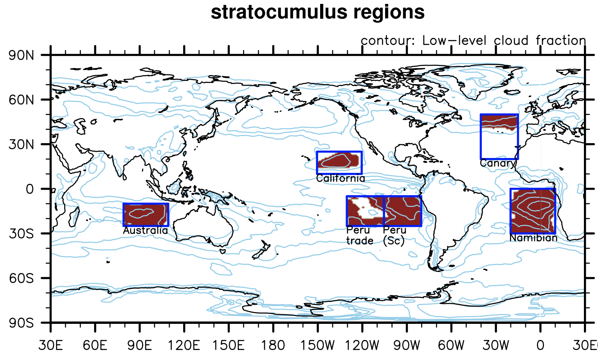

Major Cloud regimes
Regimes classification
- regions that represent ITCZ / storm track / stratocumulus regimes are selected when
- time-mean values meet the criteria listed below
- matches with the regions presented in other literatures
Note: only areas over ocean are considered.
| ITCZ | Storm Track | Stratocumulus | |
|---|---|---|---|
| location | 20ºS - 20ºN, 180ºW - 180ºE | - 30ºN – 70ºN, 90ºW – 0(North Atlantic) - 30ºN – 70ºN, 135ºE – 120ºW (North Pacific) - 70ºS – 30ºN, 180ºW – 180ºE (Southern Ocean) |
- 10ºN – 25ºN, 150ºW – 120ºW (California) - 25ºS – 5ºS, 105ºW – 80ºW (Peru - stratocumulus) - 25ºS – 5ºS, 130ºW – 105ºW (Peru - trade cumulus) - 25ºS - 10ºS, 80ºE – 110ºE (Australia) - 30ºS - 0., 20ºW – 10ºE (Nambian) - 20ºN – 50ºN, 40ºW – 15ºW (Canary) |
| criteria | convective precipitation (liquid + ice) greater than 3 x 10-5 mm/day | large-scale precipitation (liquid + ice) greater than 2 x 10-5 mm/day | regions with low-level cloud fraction greater than 30% (trade cumulus region: regions with relatively less low-level cloud fraction than stratocumulus regions) |
| Characteristics | - belt of the maximum in time-mean precipitation (convective precipitation) - occurs near equator |
- minimum sea-level pressure - strong wind - heavy precipitation - occurs mostly in subtropic |
- high subsidence - inversion - high low-level cloud fraction - occurs near the descending branches of the Hadley & Walker circulation |
|  |  |  | |
| references | Schneider et al. (2014) | Bloemendaal et al. (2020) Oouchi et al., (2006) World Wide Tropical Cyclone Centers |
Medeiros and Stevens (2011) Neubauer et al. (2014) Scott et al. (2020) ISCCP cloud classification |
References
click here
- ISCCP cloud classification: https://isccp.giss.nasa.gov/cloudtypes.html- World Wide Tropical Cyclone Centers: https://www.nhc.noaa.gov/aboutrsmc.shtml
- Bloemendaal, N., Haigh, I.D., de Moel, H. et al. (2020) Generation of a global synthetic tropical cyclone hazard dataset using STORM. Sci Data 7, 40 (2020). https://doi.org/10.1038/s41597-020-0381-2
- Medeiros, B., and B. Stevens, (2011). Revealing differences in GCM representations of low clouds. Climate Dyn., 36, 385–399, https://doi.org/10.1007/s00382-009-0694-5.
- Neubauer, D., Lohmann, U., Hoose, C., and Frontoso, M. G. (2014). Impact of the representation of marine stratocumulus clouds on the anthropogenic aerosol effect, Atmos. Chem. Phys., 14, 11997–12022, https://doi.org/10.5194/acp-14-11997-2014
- Oouchi, K., Yoshimura, J., Yoshimura, H., Mizuta, R., Kusunoki, S., & Noda, A. (2006). Tropical cyclone climatology in a global-warming climate as simulated in a 20 km-mesh global atmospheric model: Frequency and wind intensity analyses. Journal of the Meteorological Society of Japan Series II, 84(2), 259–276.
- Schneider, T., Bischoff, T. & Haug, G. Migrations and dynamics of the intertropical convergence zone. Nature 513, 45–53 (2014). https://doi.org/10.1038/nature13636
- Scott, R. C., Myers, T. A., Norris, J. R., Zelinka, M. D., Klein, S. A., Sun, M., & Doelling, D. R. (2020). Observed Sensitivity of Low-Cloud Radiative Effects to Meteorological Perturbations over the Global Oceans, Journal of Climate, 33(18), 7717-7734. Retrieved Dec 20, 2021, from https://journals.ametsoc.org/view/journals/clim/33/18/jcliD191028.xml